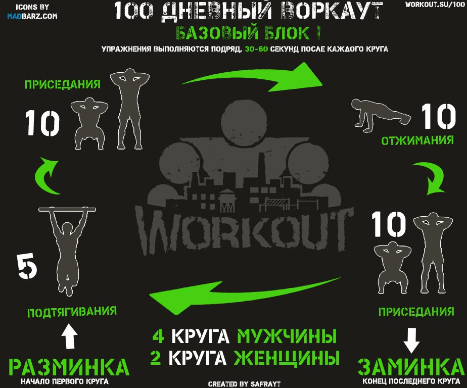

Добро пожаловать в программу 100-дневный воркаут!!!
Перед стартом, мы хотим, чтобы вы дали обещание себе дойти до конца и посвятить ближайшие 100 дней изменению себя и своей жизни в лучшую сторону. Со своей стороны мы сделаем все возможное, чтобы через 100 дней вы стали абсолютно другим человеком!
Ну что, погнали?
Разминка и Заминка
Все свои тренировки ОБЯЗАТЕЛЬНО начинайте с разминки, подробнее о том, зачем её делать и как её делать правильно, будет написано завтра в отдельном инфо-посте. Заканчивать свои тренировки так же следует с помощью заминки, о которой тоже будет отдельный инфо-пост.
Схема тренировок БАЗОВОГО блока
В базовом блоке ваша тренировочная программа будет состоять следующих упражнений, которые вы будете выполнять друг за другом без отдыха:
1. Подтягивания
2. Приседания
3. Отжиманий от пола
4. Приседания
Все 4 упражнения выполняются подряд (!), друг за другом (!!), без отдыха (!!!). Это будет считаться за 1 круг. Мужчины делают 4 круга, женщины могут начать с 2.

3 ГЛАВНЫХ ПРАВИЛА:
Нагрузка в нашей программе спроектирована таким образом, чтобы позволить вам тренироваться ежедневно, и чтобы ваш организм успевал восстанавливаться за время между тренировками.
НО! Чтобы это работало, вы должны
ВНИМАТЕЛЬНО следовать трем главным правилам, которые были перечислены ниже:
[1] Качество выполнения упражнений всегда
ИДЕАЛЬНОЕ. Если не можете сделать идеально, потому что устали -
НЕ ДЕЛАЙТЕ.
[2] Количество повторений в упражнении во всех кругах должно быть одинаковым. Если вы в первом круге сделали 5 подтягиваний, то и в последнем должны тоже сделать 5 подтягиваний. Не хватает сил?
ДЕЛАЙТЕ БОЛЕЕ ЛЕГКИЕ ВАРИАНТЫ УПРАЖНЕНИЙ ИЛИ КОМБИНИРУЙТЕ (например 3 обычных + 2 австралийских)!
[3] Отдых между кругами должен быть
НЕ МЕНЕЕ 30 секунд и НЕ БОЛЕЕ 60 секунд. Не успеваете восстановиться?
УМЕНЬШАЙТЕ КОЛИЧЕСТВО ПОВТОРЕНИЙ ИЛИ КОМБИНИРУЙТЕ С БОЛЕЕ ЛЕГКИМИ ВАРИАНТАМИ УПРАЖНЕНИЙ.
Количество повторений в каждом упражнении определяется индивидуально в зависимости от вашего уровня физической подготовки.
Мы рекомендуем всем начинать со схемы 5-10-10-10, т.е. 5 подтягиваний - 10 приседаний - 10 отжиманий от пола - 10 приседаний.
Если вы не можете выполнить заданное число повторений в обычных версиях упражнений, делайте облегченные варианты (о них будет рассказано в ближайших инфо-постах).
Главное - вы
НЕ ДОЛЖНЫ выкладываться на 100% в каждом круге, у вас ВСЕГДА должен оставаться запас сил. В этом смысл нашей системы.
Более того, у вас этот запас сил должен быть как на первом круге, так и на последнем (просто на последнем его должно быть меньше, но запас
ОБЯЗАН быть!!!).
*** ВАЖНО ***
Если после тренировки у вас остались силы, то это
НОРМАЛЬНО. Если это повторяется несколько дней подряд, то можете
УВЕЛИЧИТЬ число повторений в упражнениях.
Если остается много сил, можно подумать над переходом на более сложные варианты упражнений.
Всего в неделю у вас будет
5 тренировочных дней, 1 день растяжки и 1 день полного отдыха от тренировок. По умолчанию день растяжки - это последний день тренировочной недели,
а день отдыха вы можете выбрать самостоятельно в зависимости от самочувствия или необходимости.
По этой схеме мы будем заниматься в течение следующих 4 недель (до 29 дня). После чего внесем в неё изменения, так что следите за инфо-постами ;)
Полезная информация
1. Если вы не можете полноценно правильно выполнить какое-либо упражнение, то начните с его облегченной версии. Например вместо подтягиваний делайте
австралийские подтягивания, а вместо полноценных отжиманий -
отжимания с колен и т.д. Мы посвятим один из инфо-постов тому, как научиться подтягиваться на турнике с нуля.
В зависимости от вашей текущей подготовки, выбирайте те варианты подтягиваний и отжиманий, при которых в одном круге у вас получалось бы по 10 отжиманий и 5 подтягиваний (это НЕОБХОДИМЫЙ минимум). По мере роста силы вы можете увеличивать количество повторений в кругах или переходить на более сложные варианты выполнения упражнений.
2. Между кругами отдыхаем 30-60 секунд (НЕ БОЛЕЕ и НЕ МЕНЕЕ!), восстанавливая дыхание. Вы должны успевать восстанавливаться за указанное время, если не успеваете - уменьшайте количество повторений!
Что я понимаю в данном случае под восстановлением? Если говорить объективно, то ваше дыхание должно стать более ровным и спокойным, а пульс снизиться. Я не хочу привязываться к конкретным цифрам, поэтому давайте говорить о субъективных ощущениях. У вас должно быть ощущение, что всё "Ок" и можно начинать следующий круг. Если же есть ощущения, что начинать круг рано (сердечко того и гляди выскочит из груди или одышка никак не прекратится), то скорее всего вы переборщили с нагрузкой и нужно отдохнуть чуть больше времени перед следующим кругом.
3. Не удивляйтесь, что предложенная тренировочная схема такая простая. Она идеально подходит для старта и даст вам отличные результаты, если вы будете регулярно тренироваться. По ходу программы мы будем её несколько раз корректировать в сторону повышения сложности и интересности ;)
4. Основная идея такого кругового тренинга заключается в постепенном увеличении тренировочного объема. По мере роста сил, мы будем увеличивать нагрузку за счет увеличения количества повторений в кругах, количества кругов, а так же усложнения самих упражнений.
5. Учитесь прислушиваться к собственным ощущениям и понимать свое тело. Чем быстрее вы овладеете этим навыком, тем быстрее сможете прогрессировать. Не зацикливайтесь на представленных цифрах и процентах ;)
Дополнительная информация
1. Раз в 3 недели мы будем прибавлять по
1 кругу к нашей программе. Об этом будут соответствующие упоминания в инфо-постах.
2. В ближайшие 6 дней все инфо-посты будут посвящены тренировочной составляющей, в частности мы детально разберем технику выполнения упражнений и различные их варианты.
3. Во время выполнения кругов вы можете сбиться со счета, поэтому положите рядом с собой четыре небольших предметов (например ручек) и откладывайте по одному, каждый раз когда закончили один круг. Таким образом, вам не нужно будет забивать голову подсчетом, и вы сможете полностью сосредоточиться на выполнении упражнений.
4. В БАЗОВОМ блоке не будет отдельных упражнений на пресс. Потому что мышцы кора и так будут все время в работе при правильной технике выполнения базовых упражнений. Для новичков на данном этапе просто нет необходимости в их дополнительном стимулировании.
5. Я уже говорил о том, что перед началом нашей программы вам стоит проконсультироваться со своим врачом по поводу силовых тренировок и протестировать свои максимумы в различных упражнениях. Если вы не сделали, то ещё раз
НАСТОЯТЕЛЬНО рекомендую сделать это!
6. Расскажите своим друзьям или близким о
100-дневном воркауте! Заниматься вместе гораздо интереснее, чем заниматься в одиночку. К тому же это дополнительный стимул для того, чтобы регулярно тренироваться, а не пропускать занятия! Одно дело, если вы занимаетесь сами, и тогда можете позволить себе немного полениться, но если вы знаете, что кто-то ещё ждет вас на тренировку, то тут лень уже уступит место нежеланию подводить других!
7. И не забывайте каждый день отписываться о своих успехах в инфо-постах (или заведите
Дневник Тренировок на нашем сайте, добавив [100] в начале его названия ;))! По статистике - это сильно повышает ваши шансы на успешное окончание программы ;)
======> День 2. Разминка перед тренировкой